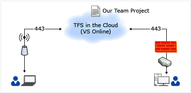

VSTS Setup and Usages¶
Introduction¶
This document is intended to be used by University of Nottingham's Development Teams migrating to TFS for use of Task Management and, in a later phase, Source Code Management (SCM). These guidelines are industry standards and should be followed by everyone in the development team to develop a vision and sustainable approach by which the University of Nottingham can prioritise IT investments that fuel business growth. VSTS web access can be accessed here; https://universityofnottingham.visualstudio.com.
Project and Collection Architecture¶
We will utilse Microsoft's offering of using Team Services, which can host all of the server-side aspects of VSTS. Our work items and team features are all hosted in the cloud - and we'll look to migrate source code and build configurations in later phases.
From an architectural point of view, this greatly simplifies your use of VSTS, as the only aspects of the architecture we need to consider are the client components and their Internet access. As for licences, all developers are covered as they use an MSDN. Licences are disucssed further later in this document.
When using the Team Services, you use a web browser to connect to the service using your Microsoft account. You can create team projects, add members to your team, and work as you would with a locally installed TFS, without the overhead of administering the servers. Team Services hosts your application tier, data tier, and build servers in the cloud.

SCRUM Template¶
The University of Nottingham will use a single SCRUM template slightly modified for reporting purposes.
This is the UoN SCRUM (v1.0) process template.
Teams¶
Inside a project, there can be a number of teams. These can be used to segment the work item backlog for the various projects.
For the purpose of University of Nottingham, each internal 'Project' will equate to a VSTS 'Team' and hence each University of Nottingham Project will be given its own iteration backlog, and any release/milestone/sprint sub iterations required.
Any given project, whether it uses a single system or has cross cutting concerns, can be setup as a VSTS Team with its own backlog and sprint iterations.
A hierarchy of Teams can be created, so each University of Nottingham project could potentially have many teams each with their own Product Backlog, then roll-up into the parent team for that sub-project like Mobile, Integration, etc
These 'Projects' should only be created by the Project Workstream Lead identified during the Project initialisation phase.
See 'Setting up projects' section for further details
Security and Privileges¶
Access Rights on VSTS¶
Work Item Tracking¶
| Free users (access level: Stakeholder) |
Team Services users (access level: Basic) |
|
|---|---|---|
| Create and edit work items, including bugs, requirements , and tasks | ✔ | ✔ |
| Search and query work items | ✔ | ✔ |
| View backlogs and boards | ✔ | ✔ |
| Provide feedback | ✔ | ✔ |
| Request feedback | ✔ | |
| Agile tools (Kanban boards, backlogs, sprint planning, portfolio management) | ✔ |
Code¶
| Free users (access level: Stakeholder) |
Team Services users (access level: Basic) |
|
|---|---|---|
| Unlimited private Git repositories | ✔ | |
| Connect to your code using Xcode, Eclipse, IntelliJ, Android Studio, Visual Studio, Visual Studio Code, and more | ✔ | |
| Centralized version control with TFVC, including Code Review | ✔ | |
| Powerful semantic code search | ✔ | |
| Build and release | ✔ | |
| Continuous deployment with Release Management | ✔ | |
| Approve releases | ✔ | ✔ |
| Package Management | ✔ |
Test¶
| Free users (access level: Stakeholder) |
Team Services users (access level: Basic) |
|
|---|---|---|
| Exploratory testing | ✔ | |
| Test Manager (purchased separately) | ✔ |
Other features¶
| Free users (access level: Stakeholder) |
Team Services users (access level: Basic) |
|
|---|---|---|
| View charts, widgets, and dashboards | ✔ | ✔ |
| Create charts, configure widgets, and set up dashboards | ✔ |
Stakeholder¶
This will be the default access right for anyone not registered as a user on VSTS. All Business Users including Project Managers and BAs will have stakeholder access. With Stakeholder access, users can create and modify all work items, and can create and save queries on all work items under their My Queries folder.
Basic¶
Developers will have basic access that allows them to manage work items and use Kanban board Anyone upgraded to Basic access should have a valid MSDN License
Access rights on Projects¶
Team Members working on a specific project or work package will be added to the Project Team by the Workstream Lead. They will then have ability to work on work items and track the progress. See 'Project setup and admin' section for further details.